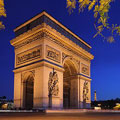
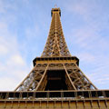
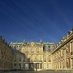
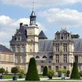
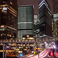
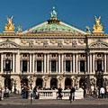
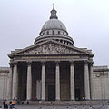
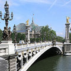
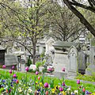
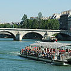

Landmarks
Paris is famous for its landmarks like the Eiffel Tower, but there are also many other landmarks that are world renowned like the Champs-Elysees for its shopping, fashion and culture, along with its history, you will never be without somewhere to go or something to do in Paris.

The Arc de Triomphe is one of the most famous monuments in Paris. It stands in the centre of the Place Charles de Gaulle (originally named Place de l'Étoile), at the western end of the Champs-Élysées. There is a smaller arch, the Arc de Triomphe du Carrousel, which stands west of the Louvre.
Arc de Triomphe
The Arc de Triomphe is one of the most famous monuments in Paris. It stands in the centre of the Place Charles de Gaulle (originally named Place de l'Étoile), at the western end of the Champs-Élysées. There is a smaller arch, the Arc de Triomphe du Carrousel, which stands west of the Louvre.

The Eiffel Tower (French: La Tour Eiffel, nickname La dame de fer, the iron lady) is a puddle iron lattice tower located on the Champ de Mars in Paris. Built in 1889, it has become both a global icon of France and one of the most recognizable structures in the world. The tower is the tallest building in Paris and the most-visited paid monument in the world.
La Tour Eiffel
The Eiffel Tower (French: La Tour Eiffel, nickname La dame de fer, the iron lady) is a puddle iron lattice tower located on the Champ de Mars in Paris. Built in 1889, it has become both a global icon of France and one of the most recognizable structures in the world. The tower is the tallest building in Paris and the most-visited paid monument in the world.

The Palace of Versailles, or simply Versailles, is a royal château in Versailles in the Île-de-France region of France. In French it is the Château de Versailles.
Château de Versailles
The Palace of Versailles, or simply Versailles, is a royal château in Versailles in the Île-de-France region of France. In French it is the Château de Versailles.

The Palace of Fontainebleau, located 55 kilometres from the centre of Paris, is one of the largest French royal châteaux. The palace as it is today is the work of many French monarchs, building on an early 16th century structure of Francis I. The building is arranged around a series of courtyards.
Chateau de Fontainebleau
The Palace of Fontainebleau, located 55 kilometres from the centre of Paris, is one of the largest French royal châteaux. The palace as it is today is the work of many French monarchs, building on an early 16th century structure of Francis I. The building is arranged around a series of courtyards.

La Défense is a major business district of the Paris aire urbaine. With a population of 20,000, it is centered in an orbital motorway straddling the Hauts-de-Seine département municipalities of Nanterre, Courbevoie and Puteaux.
La Défense
La Défense is a major business district of the Paris aire urbaine. With a population of 20,000, it is centered in an orbital motorway straddling the Hauts-de-Seine département municipalities of Nanterre, Courbevoie and Puteaux.

The Palais Garnier, known also as the Opéra de Paris or Opéra Garnier, but more commonly as the Paris Opéra, is a 1,600-seat opera house on the Place de l'Opéra in Paris, France, which was the primary home of the Paris Opera from 1875 until 1989. A grand building designed by Charles Garnier in the Neo-Baroque style.
Opera Garnier
The Palais Garnier, known also as the Opéra de Paris or Opéra Garnier, but more commonly as the Paris Opéra, is a 1,600-seat opera house on the Place de l'Opéra in Paris, France, which was the primary home of the Paris Opera from 1875 until 1989. A grand building designed by Charles Garnier in the Neo-Baroque style.

The Panthéon (from Greek Πάνθειον meaning "Every god") is a building in the Latin Quarter in Paris. It was originally built as a church dedicated to St. Genevieve and to house the reliquary châsse containing her relics but, after many changes, now functions as a secular mausoleum containing the remains of distinguished French citizens.
Le Pantheon
The Panthéon (from Greek Πάνθειον meaning "Every god") is a building in the Latin Quarter in Paris. It was originally built as a church dedicated to St. Genevieve and to house the reliquary châsse containing her relics but, after many changes, now functions as a secular mausoleum containing the remains of distinguished French citizens.

The Pont Alexandre III is an arch bridge that spans the Seine, connecting the Champs-Élysées quarter and the Invalides and Eiffel Tower quarter, widely regarded as the most ornate, extravagant bridge in Paris.
Pont Alexandre III
The Pont Alexandre III is an arch bridge that spans the Seine, connecting the Champs-Élysées quarter and the Invalides and Eiffel Tower quarter, widely regarded as the most ornate, extravagant bridge in Paris.

Père Lachaise Cemetery (French: Cimetière du Père-Lachaise; officially, cimetière de l'Est, "East Cemetery") is the largest cemetery in the city of Paris, France (48 ha, 118.6 acres), though there are larger cemeteries in the city's suburbs.
Cimetière du Père Lachaise
Père Lachaise Cemetery (French: Cimetière du Père-Lachaise; officially, cimetière de l'Est, "East Cemetery") is the largest cemetery in the city of Paris, France (48 ha, 118.6 acres), though there are larger cemeteries in the city's suburbs.

The Seine (French: La Seine) is a major river and commercial waterway within the regions of the Île-de-France and Haute-Normandie in France. It is 776 km (486 miles) long, rising at Saint-Seine near Dijon in center-eastern France in the Langres plateau, flowing through Paris and into the English Channel at Le Havre.
La Seine
The Seine (French: La Seine) is a major river and commercial waterway within the regions of the Île-de-France and Haute-Normandie in France. It is 776 km (486 miles) long, rising at Saint-Seine near Dijon in center-eastern France in the Langres plateau, flowing through Paris and into the English Channel at Le Havre.

Avenue des Champs Elysées
The Avenue des Champs-Élysées is a prestigious avenue in Paris, France. With its cinemas, cafés, luxury specialty shops and clipped horse-chestnut trees, the Avenue des Champs-Élysées is one of the most famous streets and one of the most expensive strip of real estate in the world. The name is French for Elysian Fields, the place of the blessed dead in Greek mythology.